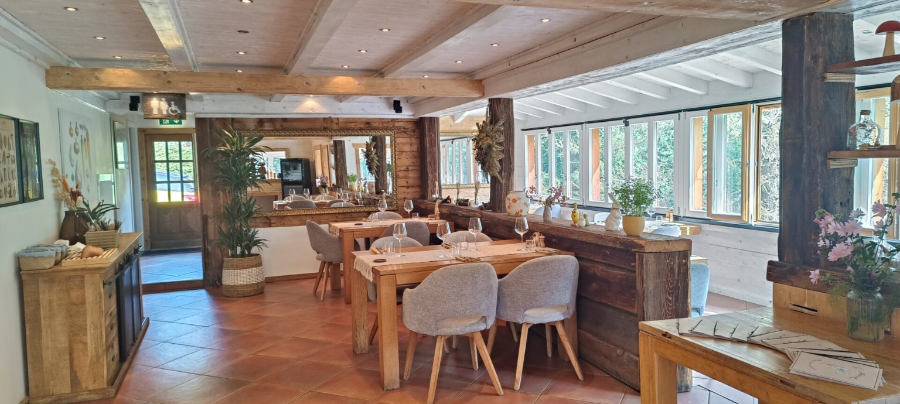
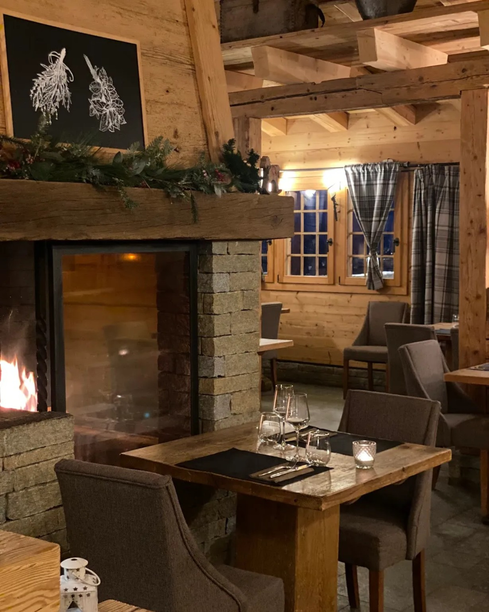
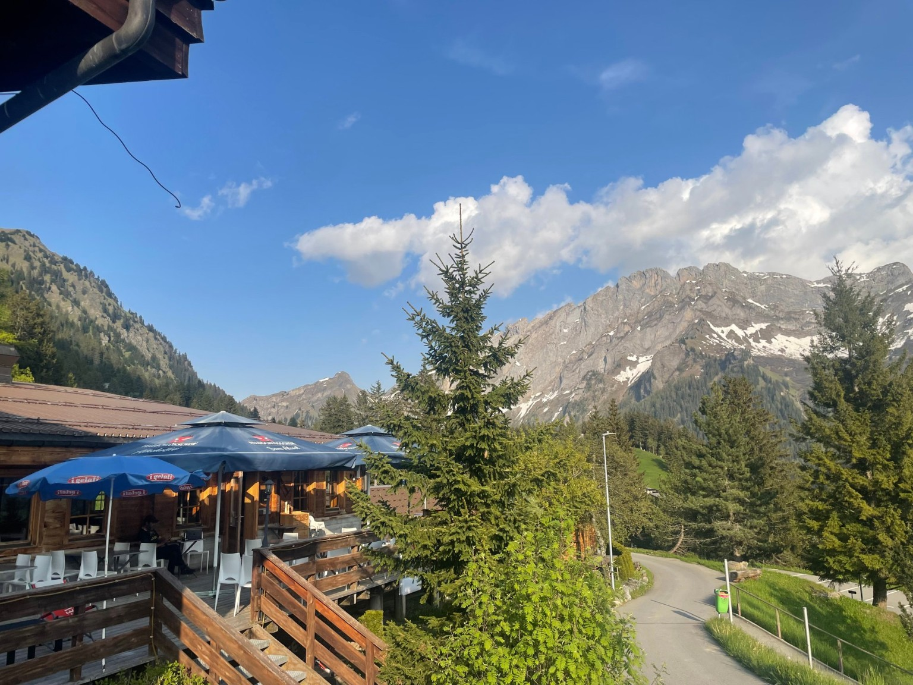
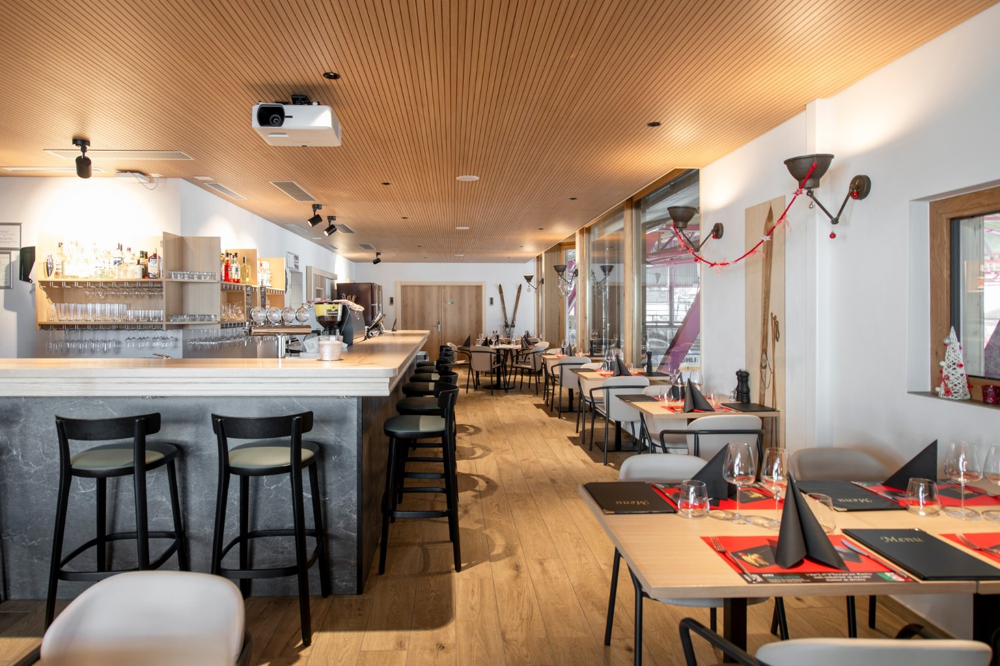
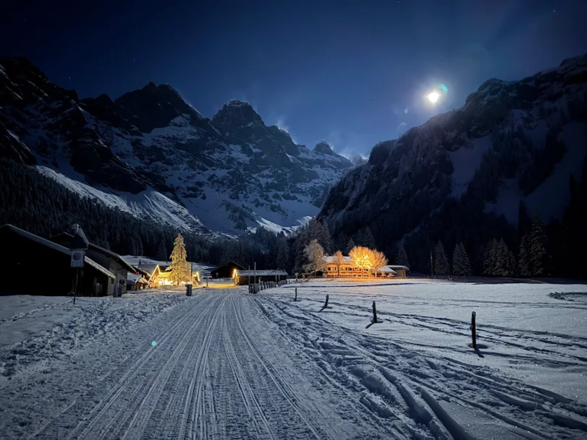
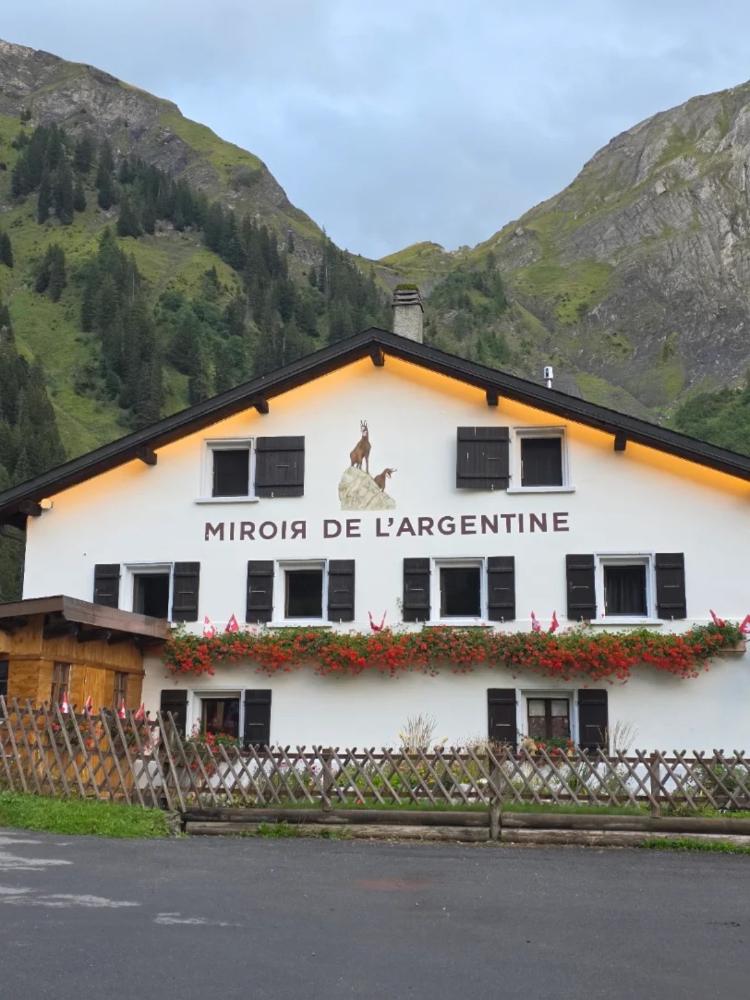

📍 Route de Solalex 68 · 1882 Gryon
☎ +41 24 498 22 33

📍 Route de l'Alpe des Chaux 40 · 1882 Gryon
☎ +41 24 498 14 26

📍 Chemin des Fracherets 2 · 1882 Gryon
☎ +41 76 214 67 92

📍 Centre sportif de Villars · 1884 Villars-sur-Ollon
☎ +41 24 495 12 20

📍 Route de Solalex 149 · 1882 Gryon
☎ +41 24 498 27 09

📍 Route de Solalex 148 · 1882 Gryon
☎ +41 24 498 14 46